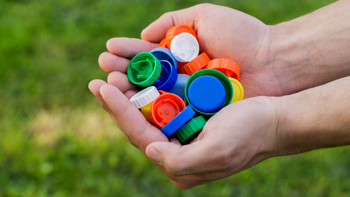
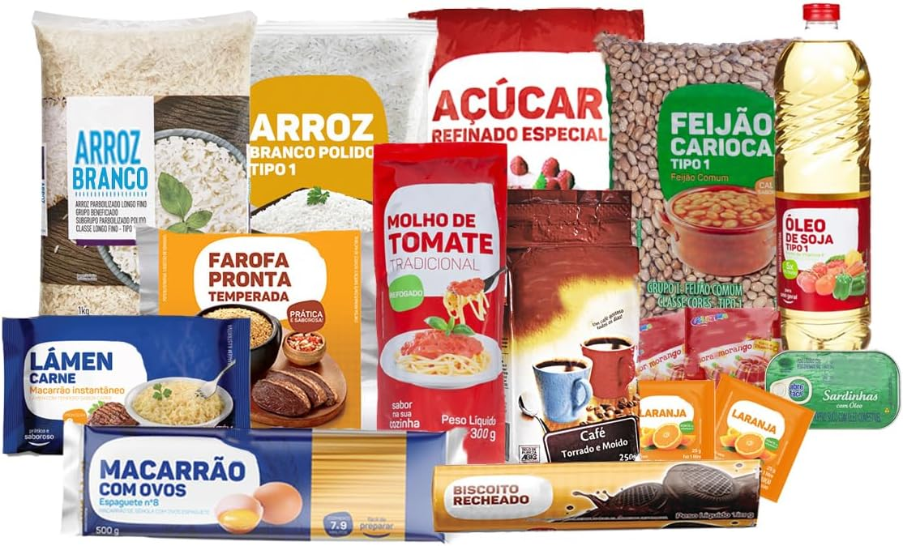

NOSSOS PROJETOS
💖 Projeto 1: Visita ao Asilo e Arrecadação de Tampinhas
Nosso grupo visita lares de idosos levando carinho, atenção e alegria. Também arrecadamos tampinhas plásticas, que são trocadas por cadeiras de rodas para pessoas que precisam de ajuda na locomoção.
🍞 Projeto 2: Doações de Alimentos
Todos os meses arrecadamos alimentos e montamos cestas básicas para 31 famílias que acompanhamos com muito carinho e dedicação.
💬 Como Você Pode Colaborar
Você pode participar como voluntário, fazer doações ou compartilhar nossos projetos nas redes sociais!
Quero colaborar!